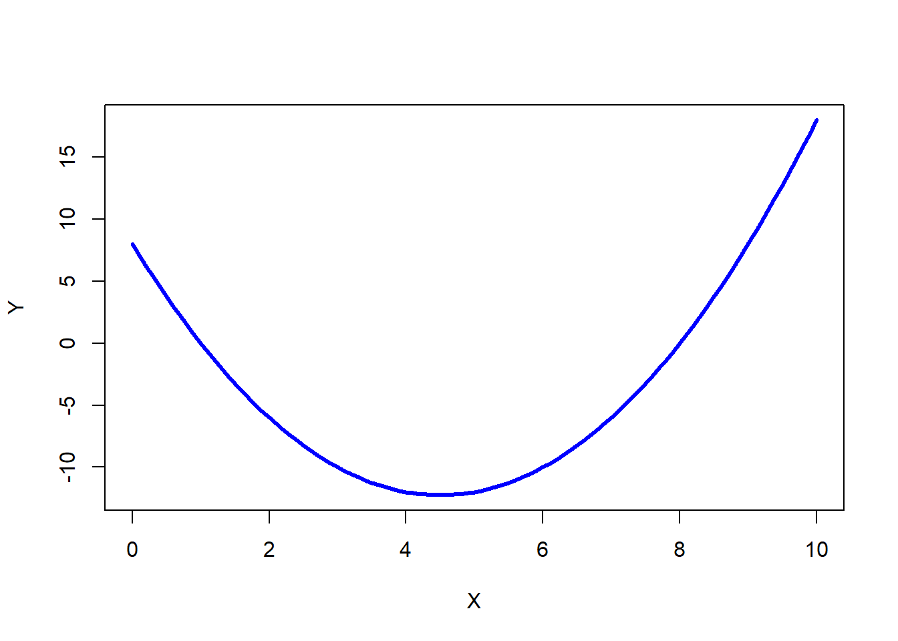
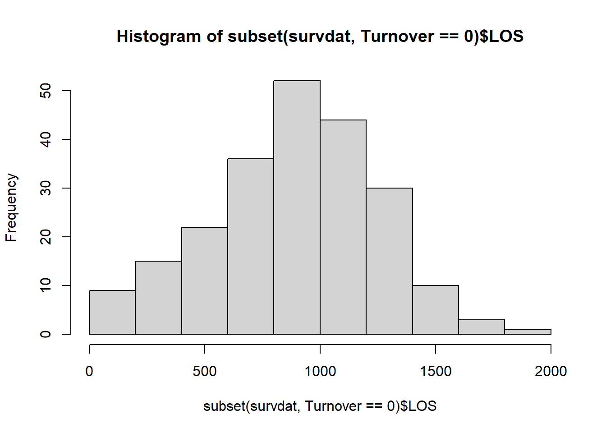

Chapter 52 Investigating Nonlinear Associations Using Polynomial Regression
In this chapter, we will learn how to investigate nonlinear associations between two continuous (interval, ratio) variables using polynomial regression. There are other ways in which we can estimate nonlinear associations, but in this chapter, well focus just on polynomial regression.
52.1 Conceptual Overview
A common way to explore a nonlinear association between two variables is to estimate a polynomial regression model. If you think way back to algebra class, a polynomial is a mathematical expression with multiple terms, which might include constants, variables, or exponents. With polynomial regression, we are able to estimate curvature in the relation between two variables, such as quadratic or cubic functional forms. For example, lets imagine that we have variables \(X\) and \(Y\), and we suspect that the association between the two variables is nonlinear. Specifically, lets assume that the true association between \(X\) and \(Y\) can be expressed as the following quadratic equation:
\(\hat{Y} = 8 - 9X + X^2\)
where \(\hat{Y}\) is the predicted (fitted) value of the outcome variable \(Y\).
If we plot this equation, we get the following parabolic shape.

If we only estimated a linear association between \(X\) and \(Y\), we might miss the fact that these two variables are indeed associated with one another or we might miss the true functional form of their association.
In addition to quadratic terms, we can also include cubic terms, which can manifest as an association with two bends or curves:
\(\hat{Y} = 1 - .25x + .75X^2 + .35X^3\)
If we plot this equation, we get the following functional form.

As the name implies, polynomial regression is a type of regression. If you havent already, prior to following along with this tutorial, I recommend checking out the chapters that introduce simple linear regression, multiple linear regression, and moderated multiple linear regression.
52.1.1 Statistical Assumptions
The statistical assumptions that should be met prior to running and/or interpreting estimates from a polynomial regression model include:
- Cases are randomly sampled from the population, such that the variable scores for one individual are independent of the variable scores of another individual;
- The association between the predictor and outcome variables is nonlinear;
- Average residual error value is zero;
- Residual errors are normally distributed.
Note: Regarding the first statistical assumption (i.e., cases randomly sampled from population), we will assume in this chapters data that this is not an issue. If we were to suspect, however, that there were some clustering or nesting of cases in units/groups (e.g., by supervisors, units, or facilities) with respect to our outcome variable, then we would need to run some type of multilevel model (e.g., hierarchical linear model, multilevel structural equation model), which is beyond the scope of this tutorial. An intraclass correlation (ICC) can be used to diagnose such nesting or cluster. Failing to account for clustering or nesting in the data can bias estimates of standard errors, which ultimately influences the p-values and inferences of statistical significance.
52.1.2 Statistical Significance
In polynomial regression, we are often interested in the significance of the highest order term in the model (e.g., \(X^3\)) when controlling for the lower order terms (e.g., \(X\), \(X^2\)). Using null hypothesis significance testing (NHST), we interpret a p-value that is less than .05 (or whatever two- or one-tailed alpha level we set) to meet the standard for statistical significance, meaning that we reject the null hypothesis that the regression coefficient is equal to zero. In other words, if a regression coefficients p-value is less than .05, we conclude that the regression coefficient differs from zero to a statistically significant extent. In contrast, if the regression coefficients p-value is equal to or greater than .05, then we fail to reject the null hypothesis that the regression coefficient is equal to zero. Put differently, if a regression coefficients p-value is equal to or greater than .05, we conclude that the regression coefficient does not differ from zero to a statistically significant extent, leading us to conclude that there is no association between the predictor variable and the outcome variable in the population.
When setting an alpha threshold, such as the conventional two-tailed .05 level, sometimes the question comes up regarding whether borderline p-values signify significance or nonsignificance. For our purposes, lets be very strict in our application of the chosen alpha level. For example, if we set our alpha level at .05, p = .049 would be considered statistically significant, and p = .050 would be considered statistically nonsignificant.
Because our regression model estimates are based on data from a sample that is drawn from an underlying population, sampling error will affect the extent to which our sample is representative of the population from which its drawn. That is, a regression coefficient estimate (b) is a point estimate of the population parameter that is subject to sampling error. Fortunately, confidence intervals can give us a better idea of what the true population parameter value might be. If we apply an alpha level of .05 (two-tailed), then the equivalent confidence interval (CI) is a 95% CI. In terms of whether a regression coefficient is statistically significant, if the lower and upper limits of 95% CI do not include zero, then this tells us the same thing as a p-value that is less than .05. Strictly speaking, a 95% CI indicates that if we were to hypothetically draw many more samples from the underlying population and construct CIs for each of those samples, then the true parameter (i.e., true value of the regression coefficient in the population) would likely fall within the lower and upper bounds of 95% of the estimated CIs. In other words, the 95% CI gives us an indication of plausible values for the population parameter while taking into consideration sampling error. A wide CI (i.e., large difference between the lower and upper limits) signifies more sampling error, and a narrow CI signifies less sampling error.
52.1.2.1 Practical Significance
As a reminder, an effect size is a standardized metric that can be compared across samples. In a polynomial regression model, an unstandardized regression coefficient (\(b\)) is not an effect size. The reason being, an unstandardized regression coefficient estimate is based on the original scaling of the predictor and outcome variables, and thus the same effect will take on different regression coefficients to the extent that the predictor and outcome variables have different scalings across samples.
In contrast, a standardized regression coefficient (\(\beta\)) is estimated by standardizing the scores of the both the predictor and outcome variables. Given this, a standardized regression coefficient can be compared to other standardized regression coefficients; however, we should take caution when making such comparisons in a polynomial regression model, as we are effectively controlling for lower-order terms in the model.
In a polynomial regression model, we can also describe the magnitude of the effect in terms of the proportion of variance explained in the outcome variable by the predictor variable (i.e., R2). Conceptually, we can think of the overlap between the variability in the predictor and outcome variables as the variance explained (R2). Ive found that the R2 is often more readily interpretable by non-analytics audiences. For example, an R2 of .10 in a polynomial regression model can be interpreted as: 10% of the variability in scores on the outcome variable can be explained by scores on the predictor variable. That is, to convert an R2 from a proportion to a percent, we just multiply by 100.
| R2 | Description |
|---|---|
| .01 | Small |
| .09 | Medium |
| .25 | Large |
Note: Typically, we only interpret the practical significance of an effect if the effect was found to be statistically significant. The logic is that if an effect (e.g., association, difference) is not statistically significant, then we should treat it as no different than zero, and thus it wouldnt make sense to the interpret the size of something that statistically has no effect.
52.1.2.2 Sample Write-Up
Based on a sample of 107 employees (N = 107), We found that the association between emotional stability scores and supervisor ratings of job performance was nonlinear. Using polynomial regression, we found that the quadratic term for emotional stability was statistically significant (b = -.475, p < .001), which implies that there is a statistically significant nonlinear association with a quadratic functional form. Moreover, with the quadratic term included, the model explained 22.7% of the variability in supervisor ratings of job performance, which was an 18.9% improvement over a simple linear regression model that lacked the quadratic term. The functional form of the association can be described as an inverted U, such that supervisor ratings of performance are highest for those employees with more moderate levels of emotional stability.
52.2 Tutorial
This chapters tutorial demonstrates how to estimate a polynomial regression model in R.
52.2.1 Functions & Packages Introduced
| Function | Package |
|---|---|
plot |
base R |
lm |
base R |
summary |
base R |
mean |
base R |
I |
base R |
hist |
base R |
seq |
base R |
min |
base R |
max |
base R |
lines |
base R |
poly |
base R |
predict |
base R |
52.2.2 Initial Steps
If you havent already, save the file called Nonlinear.csv into a folder that you will subsequently set as your working directory. Your working directory will likely be different than the one shown below (i.e., "H:/RWorkshop"). As a reminder, you can access all of the data files referenced in this book by downloading them as a compressed (zipped) folder from the my GitHub site: https://github.com/davidcaughlin/R-Tutorial-Data-Files; once youve followed the link to GitHub, just click Code (or Download) followed by Download ZIP, which will download all of the data files referenced in this book. For the sake of parsimony, I recommend downloading all of the data files into the same folder on your computer, which will allow you to set that same folder as your working directory for each of the chapters in this book.
Next, using the setwd function, set your working directory to the folder in which you saved the data file for this chapter. Alternatively, you can manually set your working directory folder in your drop-down menus by going to Session > Set Working Directory > Choose Directory. Be sure to create a new R script file (.R) or update an existing R script file so that you can save your script and annotations. If you need refreshers on how to set your working directory and how to create and save an R script, please refer to Setting a Working Directory and Creating & Saving an R Script.
# Set your working directory
setwd("H:/RWorkshop")Next, read in the .csv data file called Nonlinear.csv using your choice of read function. In this example, I use the read_csv function from the readr package (Wickham, Hester, and Bryan 2021). If you choose to use the read_csv function, be sure that you have installed and accessed the readr package using the install.packages and library functions. Note: You dont need to install a package every time you wish to access it; in general, I would recommend updating a package installation once ever 1-3 months. For refreshers on installing packages and reading data into R, please refer to Packages and Reading Data into R.
# Install readr package if you haven't already
# [Note: You don't need to install a package every
# time you wish to access it]
install.packages("readr")# Access readr package
library(readr)
# Read data and name data frame (tibble) object
df <- read_csv("Nonlinear.csv")## Rows: 107 Columns: 2## -- Column specification ------------------------------------------------------------------------------------------------------------------------
## Delimiter: ","
## dbl (2): ES, Perf##
## i Use `spec()` to retrieve the full column specification for this data.
## i Specify the column types or set `show_col_types = FALSE` to quiet this message.# Print the names of the variables in the data frame (tibble) object
names(df)## [1] "ES" "Perf"# Print variable type for each variable in data frame (tibble) object
str(df)## spec_tbl_df [107 x 2] (S3: spec_tbl_df/tbl_df/tbl/data.frame)
## $ ES : num [1:107] 0.2 0.9 2.1 1.9 1.6 1.8 1.4 2.3 1.7 0.2 ...
## $ Perf: num [1:107] 1.6 10.1 6.7 4.9 3.4 15.1 11.7 6.8 26.5 8.3 ...
## - attr(*, "spec")=
## .. cols(
## .. ES = col_double(),
## .. Perf = col_double()
## .. )
## - attr(*, "problems")=<externalptr># Print first 6 rows of data frame (tibble) object
head(df)## # A tibble: 6 x 2
## ES Perf
## <dbl> <dbl>
## 1 0.2 1.6
## 2 0.9 10.1
## 3 2.1 6.7
## 4 1.9 4.9
## 5 1.6 3.4
## 6 1.8 15.1# Print number of rows in data frame (tibble) object
nrow(df)## [1] 107There are 2 variables and 107 cases (i.e., employees) in the df data frame: ES and Perf. Per the output of the str (structure) function above, both variables are of type numeric (continuous: interval, ratio). The ES variable is a measure of emotional stability, with scores ranging from 1 (low emotional stability) to 10 (high emotional stability). The Perf variable includes performance evaluation data that can range from 0 (low performance) to 30 (high performance).
52.2.3 Visualize Association Using a Bivariate Scatter Plot
A bivariate scatter plot can be used to visualize the association between two continuous (interval, ratio) variables. This type of plot can help us identify whether an association between variables might be nonlinear.
Lets create a bivariate scatter plot to visualize the association between the ES (emotional stability) and the Perf (supervisor-ratings of job performance) variables, both of which are continuous.
The plot function from base R will help us generate a very simple scatter plot, which will be fine for our purposes. To begin, type the name of the plot function. As the first argument, well type the name of the data frame object (df), followed by the $ operator and the name of the predictor variable (ES). As the second argument, well type the name of the data frame object (df), followed by the $ operator and the name of the outcome variable (Perf).
# Create scatter plot using plot function from base R
plot(df$ES, df$Perf)In our plot window, we can see evidence of a nonlinear association between scores on ES and scores on Perf. In fact, the association seems to take the functional form of a quadratic inverted U shape. This suggests that a simple linear regression model would not be appropriate for exploration the nature of the association between these two variables. Instead, we should try estimating a polynomial regression model.
52.2.4 Estimate Polynomial Regression Model
Its customary to build a polynomial regression model in an iterative manner. That is, well start with a simple linear regression model, with ES as the predictor variable and Perf as the outcome variable, and then work our way up to a polynomial regression model by adding additional terms.
52.2.4.1 Step One: Simple Linear Regression Model
Lets name our simple linear regression model object mod1. For a review, check out the chapter that covers simple linear regression.
# Estimate simple linear regression model
mod1 <- lm(Perf ~ ES, data=df)
# Print summary of results
summary(mod1)##
## Call:
## lm(formula = Perf ~ ES, data = df)
##
## Residuals:
## Min 1Q Median 3Q Max
## -16.2413 -4.0120 0.3052 5.4448 10.6708
##
## Coefficients:
## Estimate Std. Error t value Pr(>|t|)
## (Intercept) 16.6540 1.3533 12.306 <0.0000000000000002 ***
## ES 0.4931 0.2419 2.038 0.044 *
## ---
## Signif. codes: 0 '***' 0.001 '**' 0.01 '*' 0.05 '.' 0.1 ' ' 1
##
## Residual standard error: 6.95 on 105 degrees of freedom
## Multiple R-squared: 0.03807, Adjusted R-squared: 0.02891
## F-statistic: 4.155 on 1 and 105 DF, p-value: 0.04402The regression coefficient associated with ES is .493 (p = .044), which is statistically significant, so that seems promising; however, lets plot the predicted/fitted values based on our model with the residuals (errors). To do so, we will use the plot function from base R, and enter the name of our regression model object (mod1) as the first argument. As the second argument, enter the numeral 1 to request the residuals vs.fitted values plot.
# Diagnostic plot: Residuals vs. Fitted Values
plot(mod1, 1)
The plot shows evidence of what looks like a nonlinear association. Given that, we have found additional evidence that the association between the ES and Perf variables violates key statistical assumptions that should be satisfied to interpret a simple linear regression. Thus, we should proceed forward by constructing a polynomial regression model.
52.2.4.2 Step Two: Polynomial Regression Model
Well build upon our previous model by adding a quadratic term to our model. Prior to doing so, however, lets grand-mean center our predictor variable (ES) to reduce the collinearity between ES and its quadratic (product) term. Well call the grand-mean centered variable c_ES. For more information on centering variables, check out the chapter on centering and standardizing variables.
Note: While grand-mean centering may improve estimates of standard errors, it does not generally affect the overall model fit to the data; thus, when plotting model, you may choose to use the uncentered predictor variables.
# Grand-mean center predictor variable and create new variable
df$c_ES <- df$ES - mean(df$ES, na.rm=TRUE)There are different ways we can add the quadratic term to the model. Lets start with what I believe is the most intuitive approach.
- Lets name this polynomial regression model object (
mod2) using the<-assignment operator. - To the right of the
<-assignment operator, start with the simple linear regression model we specified in the previous step. - In the regression model formula, type the name of your grand-mean centered predictor variable (
c_ES), followed by the+operator. - After the
+operator, insert theIfunction from base R, and within its parentheses, type the name of the grand-mean centered predictor variable (c_ES) followed by^2to signal that you want to include a quadratic term.
# Estimate polynomial regression model: Option 1
mod2 <- lm(Perf ~ c_ES + I(c_ES^2), data=df)
# Print summary of results
summary(mod2)##
## Call:
## lm(formula = Perf ~ c_ES + I(c_ES^2), data = df)
##
## Residuals:
## Min 1Q Median 3Q Max
## -16.2757 -4.1173 0.9039 4.9100 10.9401
##
## Coefficients:
## Estimate Std. Error t value Pr(>|t|)
## (Intercept) 22.70895 0.94469 24.038 < 0.0000000000000002 ***
## c_ES 0.57739 0.21850 2.642 0.0095 **
## I(c_ES^2) -0.47454 0.09405 -5.045 0.00000193 ***
## ---
## Signif. codes: 0 '***' 0.001 '**' 0.01 '*' 0.05 '.' 0.1 ' ' 1
##
## Residual standard error: 6.259 on 104 degrees of freedom
## Multiple R-squared: 0.2272, Adjusted R-squared: 0.2124
## F-statistic: 15.29 on 2 and 104 DF, p-value: 0.00000151Looking at the output, note that the product (quadratic, second-order) term is statistically significant (b = -.475, p < .001), which implies that there is a statistically significant nonlinear association between ES and Perf that specifically takes a quadratic functional form. Note that the unadjusted R2 value increased from .038 (3.8%) in the simple linear regression model to .227 (22.7%) in this polynomial regression model; that is a huge amount of incremental variance explained in Perf after adding the quadratic term of ES to the model.
Lets plot the fitted/predicted values in relation to the residuals, as we did with the simple linear regression model above.
# Diagnostic plot: Residuals vs. Fitted Values
plot(mod2, 1)That looks much better with regard to meeting the statistical assumption that the average residual error value is zero.
Next, lets check to see if we can feel reasonably confident that the data meet the statistical assumption that the residual errors are normally distributed for each level of the predictor variable. To do so, we will use the histogram (hist) function from base R. As the sole argument, enter the summary function with the regression model (mod2) in the parentheses, followed by the $ operator and residuals (which extracts the vector of residuals from your model summary).
# Diagnostic plot: Distribution of residuals
hist(summary(mod2)$residuals)
The distribution of the residuals seems to be approximately normal and centered around zero, so we can conclude that we have pretty good evidence that we have met that statistical assumption. Given that we have good reason to believe we have met the aforementioned statistical assumptions, we can proceed forward with interpreting and exploring our polynomial regression model.
If we create a sequence of predictor (x) variable values (that I call xvalues) using the seq function from base R and plug those values along with the regression equation values from the output above into the plot function from base R, we view the predicted form of the nonlinear association.
# Create object xvalues w/ continuous sequence of 1000 values
# to include observed range of centered predictor values
xvalues <- seq(min(df$c_ES), # Mininum of observed range
max(df$c_ES), # Maximum of observed range
length=1000) # Number of sequence values within range
# Create scatterplot for predictor and outcome variables
plot(df$c_ES, # Insert predictor variable
df$Perf, # Insert outcome variable
xlab="Emotional Stability", # Set x-axis label
ylab="Supervisor-Rated Performance") # Set y-axis label
# Add estimated regression equation line to scatterplot
lines(xvalues, # Insert continuous sequence of values object
22.70895 + 0.57739*(xvalues^1) + -0.47454*(xvalues^2), # Insert regression equation
col="red") # Set line color to red
As you can see, supervisor-ratings of performance are highest when emotional stability is somewhere around its mean. Thus, it seems that there is a sweet-spot for the Big Five personality dimension of emotional stability when it comes to performance. People who are really high in emotional stability might have a tendency to be too relaxed and may not be motivated to perform, whereas those who are really low in emotional stability might be too prone to experiencing emotional fluctuations and volatility to perform well.
We can also estimate the polynomial regression model without having to create a new grand-mean-centered predictor variable. The poly function from base R allows us to create orthogonal (uncorrelated) polynomial (e.g., product, quadratic) terms. Well name this model mod3.
# Estimate polynomial regression model: Option 2
mod3 <- lm(Perf ~ poly(ES, 2), # Insert 2 for quadratic
data=df) # Specify data frame
# Print summary of results
summary(mod3)##
## Call:
## lm(formula = Perf ~ poly(ES, 2), data = df)
##
## Residuals:
## Min 1Q Median 3Q Max
## -16.2757 -4.1173 0.9039 4.9100 10.9401
##
## Coefficients:
## Estimate Std. Error t value Pr(>|t|)
## (Intercept) 19.0486 0.6051 31.481 < 0.0000000000000002 ***
## poly(ES, 2)1 14.1666 6.2589 2.263 0.0257 *
## poly(ES, 2)2 -31.5788 6.2589 -5.045 0.00000193 ***
## ---
## Signif. codes: 0 '***' 0.001 '**' 0.01 '*' 0.05 '.' 0.1 ' ' 1
##
## Residual standard error: 6.259 on 104 degrees of freedom
## Multiple R-squared: 0.2272, Adjusted R-squared: 0.2124
## F-statistic: 15.29 on 2 and 104 DF, p-value: 0.00000151Note that the unadjusted R2 value of .227 is the same for both approaches, but due to differences in how the polynomial is created/estimated, we see differences in the coefficients between the two approaches. Nonetheless, if we plot the second approach, we see the same functional form. Here, we use the predict function from base R to create predicted values. A benefit to using this approach is that the predictor (x) variable remains in its original scale (i.e., 1-5) in the model and plot. In the script below, I also show a different way of specifying the plot function arguments.
# Create object xvalues w/ continuous sequence of 1,000 values
# to include observed range of uncentered predictor values
xvalues <- seq(min(df$ES), # Mininum of observed range
max(df$ES), # Maximum of observed range
length=1000) # Number of sequence values within range
# Estimate predicted values
predicted_values <- predict(mod3, # Regression model/equation
data.frame(ES=xvalues)) # Values to fit
# Create scatterplot for predictor and outcome variables
plot(Perf ~ ES, # Specify outcome and predictor
data=df, # Specify data frame
xlab="Emotional Stability", # Set x-axis label
ylab="Supervisor-Rated Performance") # Set y-axis label
# Add estimated regression equation line to scatterplot
lines(xvalues, # sequence of predictor values
predicted_values, # Insert fitted/predicted values based on model
col="red") # Set line color to redAs you can see, those two options for estimating a polynomial regression model reach the same end.
If youd like to add a cubic term to the model, please do the following.
# Estimate polynomial regression model: Option 1
mod4 <- lm(Perf ~ c_ES + I(c_ES^2) + I(c_ES^3), data=df)
# Print summary of results
summary(mod4)##
## Call:
## lm(formula = Perf ~ c_ES + I(c_ES^2) + I(c_ES^3), data = df)
##
## Residuals:
## Min 1Q Median 3Q Max
## -16.4004 -4.2345 0.9338 4.9217 10.9981
##
## Coefficients:
## Estimate Std. Error t value Pr(>|t|)
## (Intercept) 22.720359 0.951473 23.879 < 0.0000000000000002 ***
## c_ES 0.664814 0.556168 1.195 0.235
## I(c_ES^2) -0.474834 0.094512 -5.024 0.00000214 ***
## I(c_ES^3) -0.006664 0.038953 -0.171 0.864
## ---
## Signif. codes: 0 '***' 0.001 '**' 0.01 '*' 0.05 '.' 0.1 ' ' 1
##
## Residual standard error: 6.288 on 103 degrees of freedom
## Multiple R-squared: 0.2274, Adjusted R-squared: 0.2049
## F-statistic: 10.11 on 3 and 103 DF, p-value: 0.000006791Or, an equivalent approach is the following.
# Estimate polynomial regression model: Option 2
mod5 <- lm(Perf ~ poly(ES, 3), # Insert 3 for cubic
data=df)
# Print summary of results
summary(mod5)##
## Call:
## lm(formula = Perf ~ poly(ES, 3), data = df)
##
## Residuals:
## Min 1Q Median 3Q Max
## -16.4004 -4.2345 0.9338 4.9217 10.9981
##
## Coefficients:
## Estimate Std. Error t value Pr(>|t|)
## (Intercept) 19.0486 0.6079 31.334 < 0.0000000000000002 ***
## poly(ES, 3)1 14.1666 6.2884 2.253 0.0264 *
## poly(ES, 3)2 -31.5788 6.2884 -5.022 0.00000216 ***
## poly(ES, 3)3 -1.0758 6.2884 -0.171 0.8645
## ---
## Signif. codes: 0 '***' 0.001 '**' 0.01 '*' 0.05 '.' 0.1 ' ' 1
##
## Residual standard error: 6.288 on 103 degrees of freedom
## Multiple R-squared: 0.2274, Adjusted R-squared: 0.2049
## F-statistic: 10.11 on 3 and 103 DF, p-value: 0.000006791As you can see, adding the cubic term did not explain additional variability in the outcome. Thus, we would conclude in this situation that the association between ES and Perf has a quadratic functional form.
Sample Technical Write-Up: Based on a sample of 107 employees (N = 107), We found that the association between emotional stability scores and supervisor ratings of job performance was nonlinear. Using polynomial regression, we found that the quadratic term for emotional stability was statistically significant (b = -.475, p < .001), which implies that there is a statistically significant nonlinear association between ES and Perf that specifically takes a quadratic functional form. Moreover, with the quadratic term included, the model explained 22.7% of the variability in supervisor ratings of job performance, which was an 18.9% improvement over a simple linear regression model that lacked the quadratic term. The functional form of the association can be described as an inverted U, such that supervisor ratings of performance are highest for those employees with more moderate levels of emotional stability.
52.2.5 Summary
In this chapter, we learned how to explore a nonlinear association by estimating a polynomial regression model.